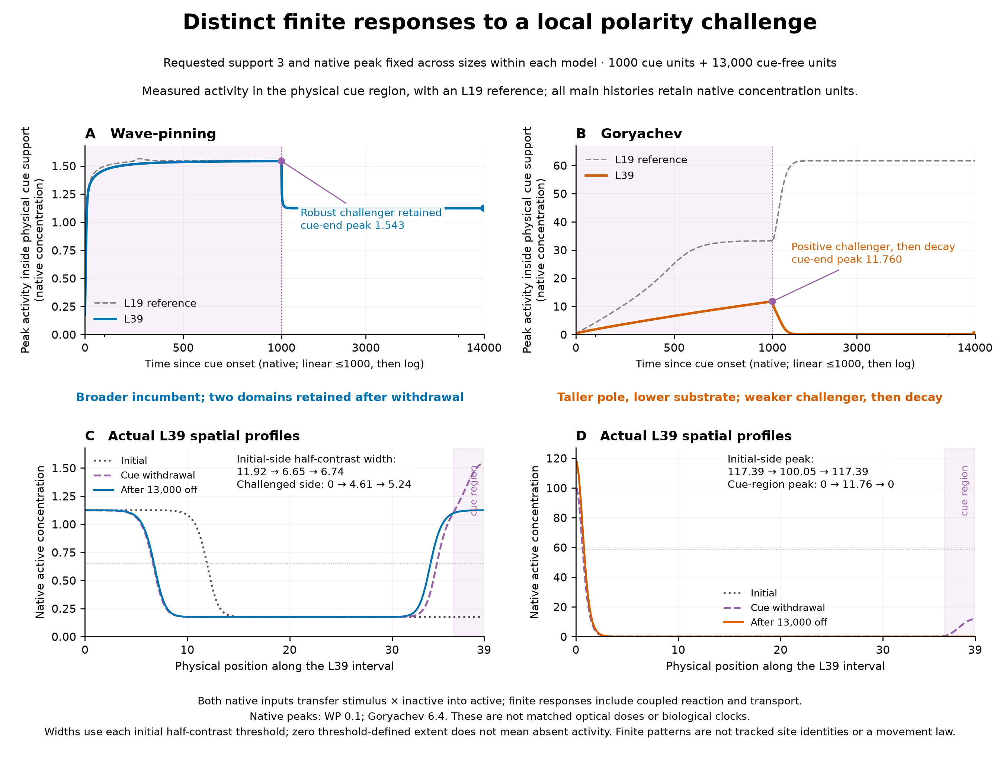
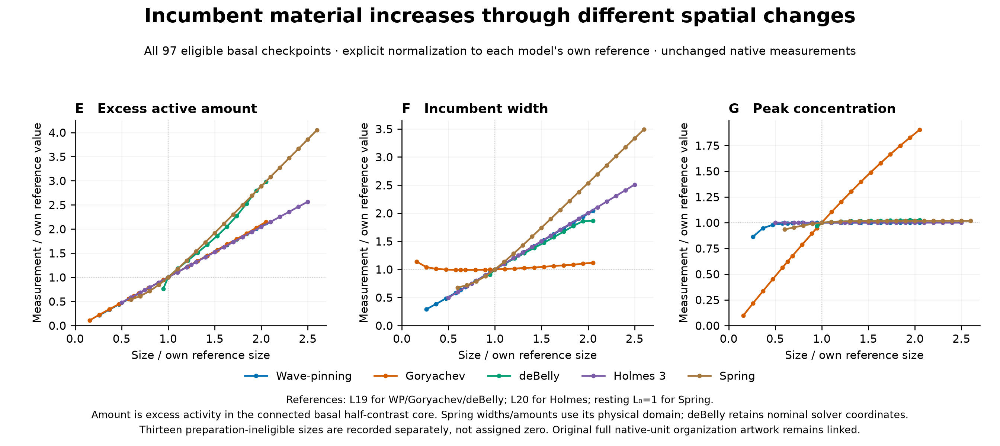
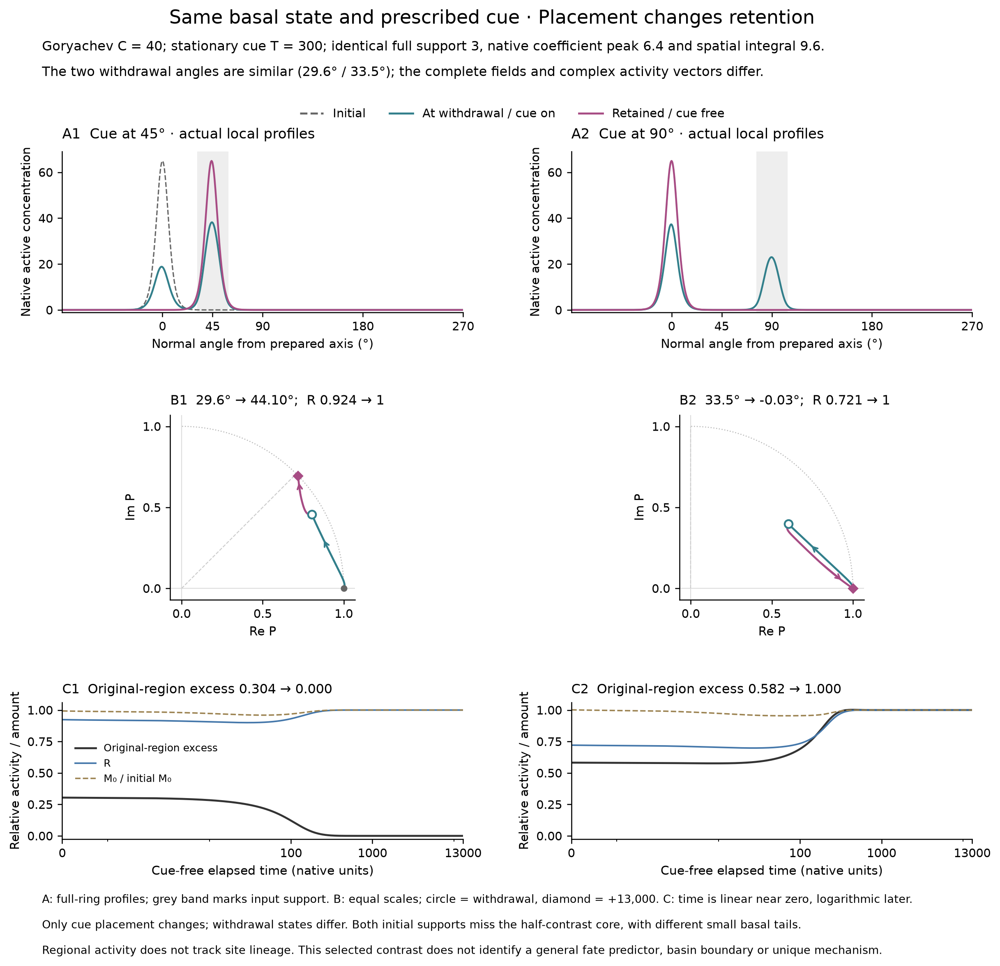
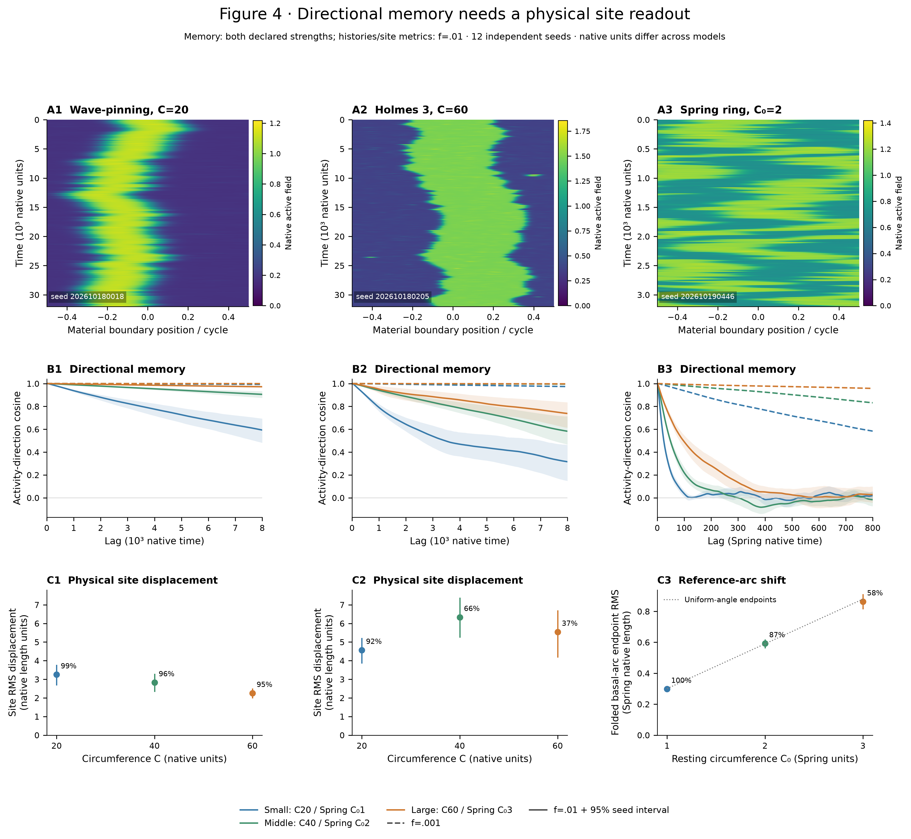
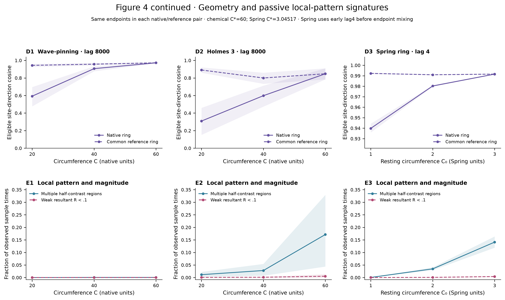

Revised Figures 2–4
Current candidates for discussion: Figure 2 contains the separate finite-response replacement draft; Figure 3 contains the completed three-size stationary-cue review. Their emphasis and main composition remain provisional. Figure 4 retains its reviewed Spring-inclusive sheets. Numerical checks do not imply author acceptance.
Generated 2026-10-19T17:19:06.726065+00:00. Static report; native campaigns are separately recorded scientific inputs.
Figures and legends PDF · Full revised outline
Figure 2. Distinct finite responses to local polarity challenges
Incumbent growth takes different spatial forms: most models widen; Goryachev grows taller and lowers available inactive substrate.
Under the native stimulus-times-inactive channel, Goryachev has weaker size-dependent challenger activity; its L39 response is positive and later decays. WP has nearly size-invariant challenger height but a larger remaining incumbent domain at L39.
After withdrawal WP39 retains two observed active domains while Goryachev39 restores the initial-side pattern over the finite follow-up. These are native response routes, not unique mechanistic classifications.


Figure 3. Local activity and retained orientation under stationary cues
Ring measurements distinguish graded retained reorientation from nearly cancelling activity. Across all 180 non-antipodal conditions, the final field is a shifted copy of its own basal pattern with one resolved activity region and recovered resultant magnitude. Intermediate angles therefore reflect a retained spatial shift rather than a weak final activity pattern.
The finite-cue response depends on size within each native protocol. For a 90-degree cue of duration 100, Wave-pinning retains 79.86, 55.36 and 32.52 degrees across circumferences 20, 30 and 40; Goryachev retains 89.09, -0.014 and -0.003 degrees. The complete map preserves other angles and durations rather than reducing them to an arbitrary effective-duration threshold.
Cue-on deflection and later orientation are distinct observations. The same-basal placement pair demonstrates how similar withdrawal angles can accompany different resultant magnitudes, local profiles and subsequent activity redistribution. This supports examining the activity vector and spatial pattern together; it does not identify a unique competition mechanism.



Figure 4 · Directional memory and physical site dynamics
Angular-memory and physical site-shift measurements can show different size trends. Spring makes the forcing dependence explicit: weak-input lag-800 direction cosine rises .584/.832/.958 across sizes despite nonmonotone basal-arc RMS, whereas stronger input gives .019/−.017/.028 with substantial mean relative first-moment magnitude remaining and late folded shifts near the uniform-angle reference. All three main models retain their native units and controls.
Pairwise coordinate remapping exposes the geometric part of site-angle retention, while local-region and magnitude readouts distinguish observable organizations without classifying abrupt events or inferring competition.


Interactive distance-response explorer · Independent scientific review · Methods, evidence and limitations